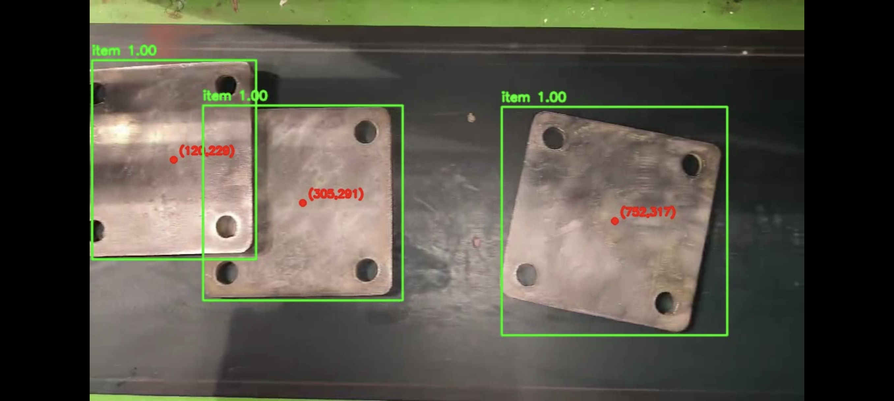
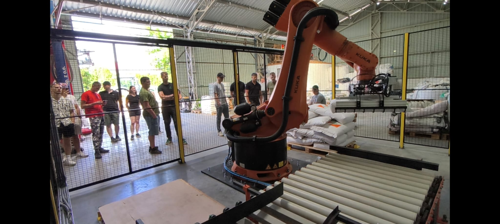
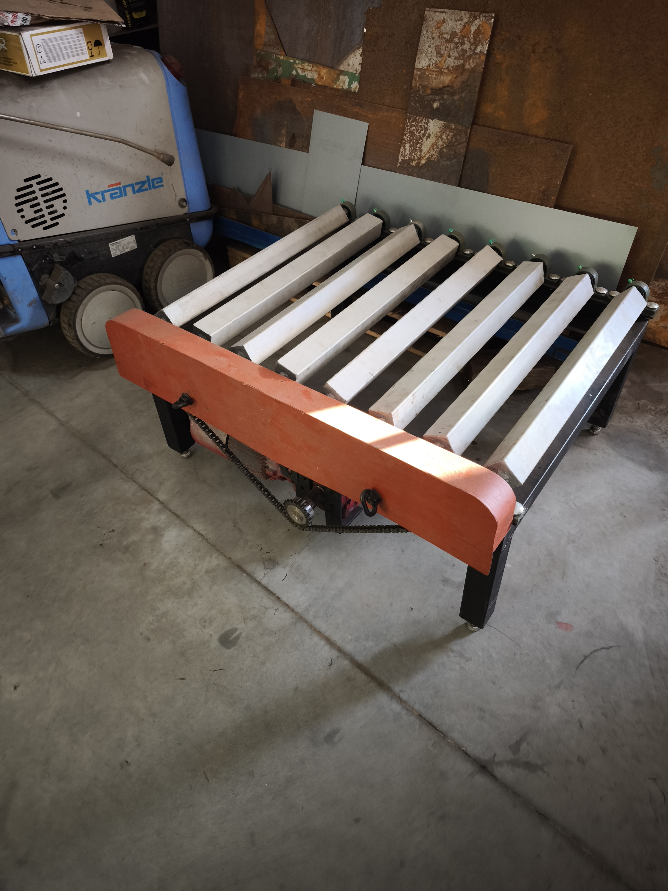
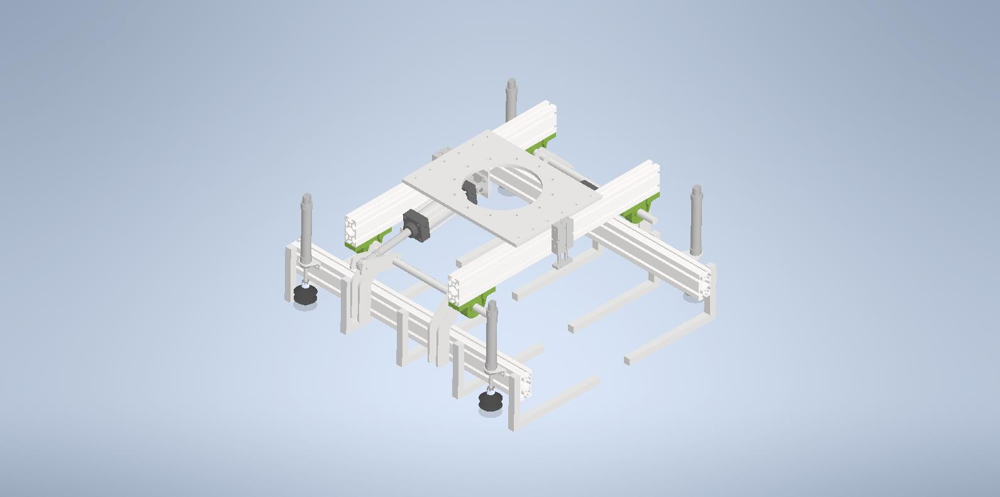

Automatyzacja procesów przemysłowych
Robotyka, vision i automatyka zbudowane pod Twój proces.
Projektujemy i uruchamiamy kompletne rozwiązania dla produkcji — od mechaniki stanowiska, przez roboty i systemy wizyjne, po PLC, HMI i bezpieczeństwo.

Systemy wizyjne
Kontrola, która dzieje się automatycznie — w rytmie produkcji.
Tworzymy systemy do identyfikacji, pomiarów, kontroli kompletności, OCR, detekcji wad i pozycjonowania robotów. Gdy klasyczne metody nie wystarczają, wykorzystujemy NVIDIA Jetson i modele AI.
Oferta
Jedna odpowiedzialność za cały system.
Nie dokładamy urządzenia do procesu „na siłę”. Najpierw analizujemy zadanie, potem dobieramy technologię i budujemy rozwiązanie od mechaniki po oprogramowanie.
Realizacje
Od konstrukcji i spawania po software i start produkcji.
Realizujemy projekty całościowo, dzięki czemu mechanika, automatyka, robot i system wizyjny powstają jako jeden spójny system.



Partner technologiczny
Robot jako element kompletnego procesu, nie osobny produkt.
Dobieramy i integrujemy roboty SIASUN do paletyzacji, manipulacji, spawania, obsługi maszyn i aplikacji z systemem wizyjnym.
Kontakt
Masz proces, który warto zautomatyzować?
Wyślij zdjęcia, krótki film lub opis procesu. Na tej podstawie możemy wstępnie ocenić koncepcję, zakres prac i dalszy kierunek projektu.
Projekt-Automatyka · Bzowo 104, 86-160 Warlubie · NIP 8761950707